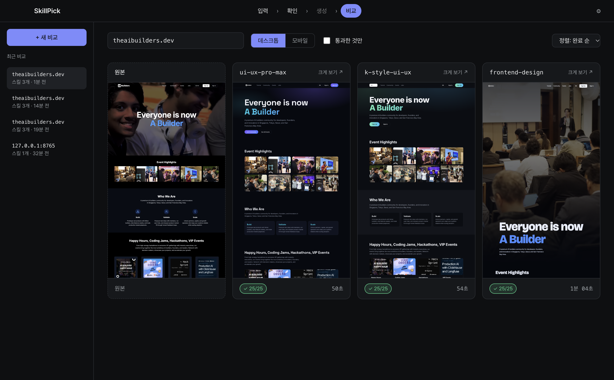

SkillPick
자기 서비스를 직접 만드는 개발자와 1인 창업자를 위한 데스크톱 앱
태지로 · 박태영 · 1인 개발
자기 서비스를 직접 만드는 개발자, 1인 창업자
스킬 하나로 시키고, 별로면 다른 스킬로 다시 시킴. 나란히 비교할 수 없음
이 불편이 얼마나 흔한지 보여 주는 설문은 아직 없고, 지금 근거는 작성자 본인의 경험입니다
스킬 세 개가 같이 도는 모습

원본과 시안 세 개, 모두 25/25
지켜야 할 것 선정과 통과 판정은 순수 함수와 단위 시험 121개로 고정
별도 세션, Node 접근 없음, CSP 헤더 강제, 이동과 새 창 차단
실제 프로세스 수와 시작·종료 시각만 표시. 가짜 진행률과 재생 없음
요구사항, 설계, 작업 목록과 제품·기술·보안 규칙을 .kiro/에 두고 Kiro가 따라 구현. 문서 작성은 Claude Code
src/core 저장 시 npm test 실행
Kiro CLI 비대화 모드와 커스텀 에이전트로 시안을 만듦. 스파이크로 동시 실행과 보안 한계를 직접 확인
스킬 3개 시안이 모두 끝나기까지 (한 사이트, 한 번 측정)
세 시안 모두 지켜야 할 것을 담음. 다시 고치기 0번
세 Kiro CLI 시작 시각 차이. 43.6초 동안 함께 실행